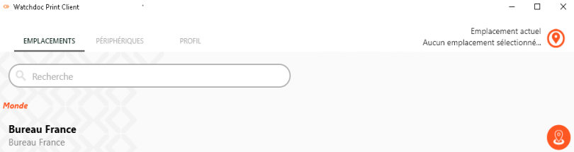
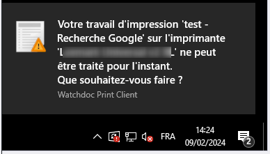
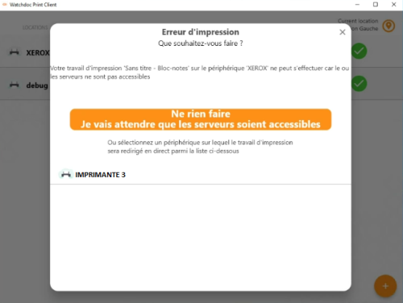

Principe
Une fois Watchdoc Print Client for Windows installé (manuellement ou par déploiement de masse) sur un poste utilisateur, il est activable via l'icône présente dans la zone de notifications du poste de travail.
-
si l'icône n'apparaît pas dans la zone de notifications, cliquez sur la flèche pour afficher les icônes cachées :
-
parmi les icônes affichées, cliquez sur l'icône Watchdoc Print Client :

Sélectionner l'emplacement
Lors de son installation sur votre poste, Watchdoc Print Client for Windows localise physiquement votre poste ainsi que des éléments de configuration du parc d'impression (périphériques d'impression, serveurs, files, etc.).
Cette localisation (fondée sur l'IP du poste) lui permet de vous proposer d'imprimer sur les périphériques de proximité.
-
Lorsque vous lancez Watchdoc Print Client, vérifiez l'emplacement affiché sous l'onglet Emplacements. Conservez-le s'il correspond à l'endroit à partir duquel vous souhaitez imprimer :

-
si vous souhaitez le modifier, sélectionnez un nouvel emplacement dans la liste.
→ Une fois l'emplacement sélectionné, vous pouvez lancer l'impression.
Installer manuellement un périphérique d'impression
Si vous souhaitez utiliser une imprimante disponible à l'emplacement choisi mais qui n'apparaît pas dans la liste, vous pouvez l'ajouter manuellement :
-
sous l'onglet Périphériques, cliquez sur le bouton
 Installer :
Installer : -
dans la liste, sélectionnez l'imprimante que vous souhaitez installer :
-
cliquez ensuite sur le bouton
 :
:

-
Un curseur indique la progression de l'installation. Au terme de l'opération, une coche verte puis une notification informe que l'imprimante a bien été installée :

-
lancez le travail d'impression depuis votre poste de travail (via la commande Imprimer ou CTRL+P) ;
-
lancez l'application Watchdoc Print Client for Windows ;
-
vérifiez que l'emplacement affiché par défaut correspond bien à votre emplacement ou sélectionnez-en un autre dans la liste des emplacement ;
-
une fois votre emplacement sélectionné (dernier niveau de la hiérarchie), la ou les files disponibles pour cet emplacement sont affichés dans la liste "Périphériques" ;
-
rendez-vous sur l'un des périphériques associés à la file : vous accédez alors au WES depuis lequel vous pouvez débloquer vos impressions.
Utiliser l'impression directe en cas de panne
Dans le cas où le serveur d'impression est défaillant, il est prévu d'autoriser le mode d'impression directe permettant à l'utilisateur de lancer son impression sur une file installée par Watchdoc Print Client qui ne dépend pas du serveur.
-
Lancez le travail d'impression depuis votre poste de travail ;
-
Une notification de Watchdoc Print Client indique une indisponibilité de la file universelle :

-
Choisissez :
-
soit d'attendre que le serveur soit de nouveau disponible pour imprimer :

-
soit d'imprimer en direct sur l'un des périphériques disponibles (à choisir, ou pas, dans une liste de périphériques sur lesquels vous vous êtes déjà authentifiés).
Dans ce cas, le travail demandé est imprimé sans authentification ni validation. Il est donc préférable de se trouver à proximité du périphérique d'impression, notamment si le document est confidentiel.
-
-
Rendez-vous sur le périphérique pour récupérer votre impression.